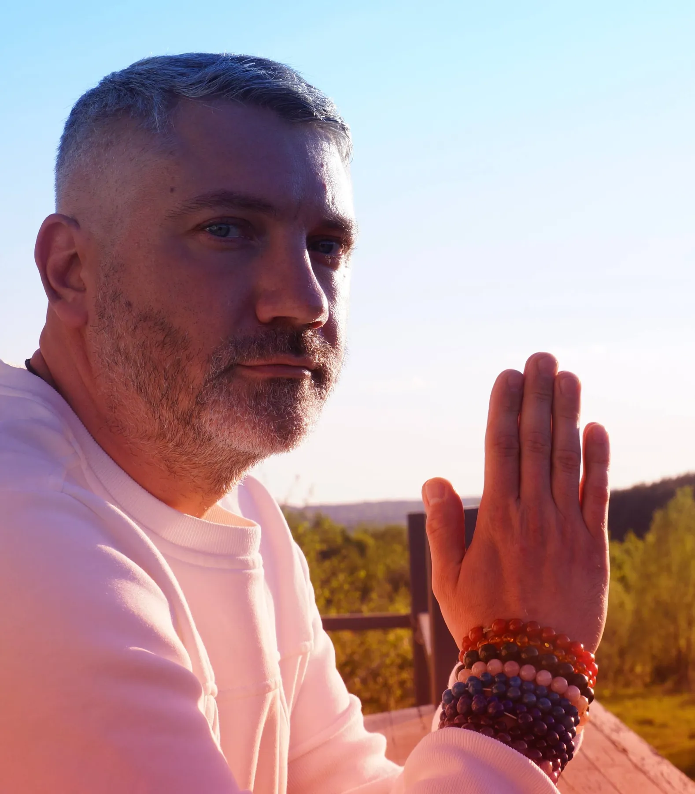
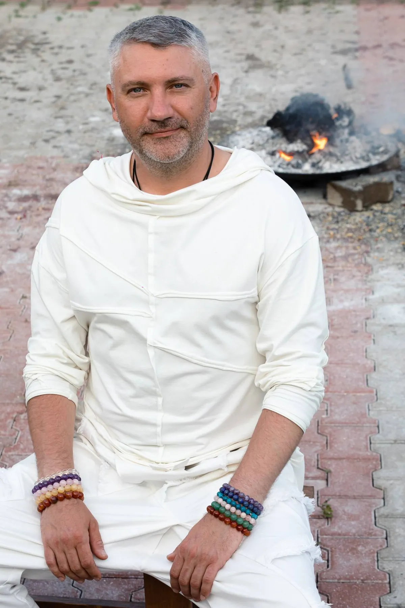
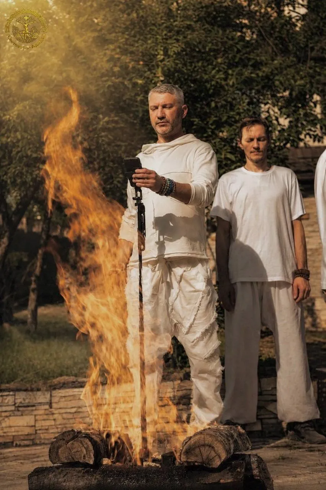

Духовный путь
Индивидуальная работа, диагностика и поиск понимания происходящего.

ПРАКТИК · ИССЛЕДОВАТЕЛЬ · АВТОР
Человек. Путь. Традиция. Живое пространство.

О СВЕТОЗАРЕ
Светозаръ-Адидэв — практик, исследователь и автор. В центре его подхода — человек, связь поколений, традиция и внимательное отношение к внутреннему пути.
Финальная биография будет опубликована после подтверждения фактов.
ПУТЬ
Не набор отдельных практик, а движение от понимания себя к связи с Родом, Предками, традицией и собственным путём.
ПРАКТИКИ
Индивидуальная работа, диагностика и поиск понимания происходящего.
Связь поколений, родовые программы и практики обращения к Предкам.
Отмаливание, отчитка и традиционные практики с воском.
Огонь, Агнихотра, совместные встречи и живые события.

ЦЕРЕМОНИИ И СОБЫТИЯ
Настоящие встречи на природе, совместные практики и живое пространство вокруг огня.
ОТЗЫВЫ
«Здесь появятся реальные слова людей — без рейтингов, обещаний и рекламного шума.»
3–5 подтверждённых отзывов будут добавлены на этапе финализации контента.
ПРОСТРАНСТВО
Место для встреч, практик, церемоний, природы и общения.
ПРОСТРАНСТВО СОЗДАЁТСЯСВЯЗАТЬСЯ
Telegram будет активирован после финальной проверки контакта.